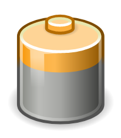

December 2024
Nothing says '80s pop' like a DX7.
 How to write a technical or scientific report (Dec 2025)
How to write a technical or scientific report (Dec 2025)Some guidance, mostly for science and engineering students, on how to write a scientific paper or technical report. I've updated this article slightly since I wrote it thirty years ago, to deal with the rise in web-based publication. But, frankly, I think that similar standards should apply to electronic and print reporting.
Categories: education
In a market dominated by the Amazon Kindle, it's easy to forget that Sony, not Amazon, made the first commercially-successful e-book reader.
Categories: TDMTLTAM

They don't make 'em like that any more: things you can switch off (Dec 2024)How worried should we be, that we're wasting electrical energy for no benefit?
Categories: TDMTLTAM, science and technology
There was a time when we didn't hate printers. Unfortunately, it was forty years ago.
Categories: TDMTLTAM
As the Microsoft Windows user experience continues to worsen, what should Linux advocates do?
Categories: general computing, Linux
There was a time when merely being a Linux user set you apart from the common herd. These days, with Linux so ubiquitous, you'll need to take additional steps to make yourself out as one of the elite.
Categories: Linux
Wayland isn't new, but many of us have been able to avoid it until recently. With many Linux distributions now pushing Wayland hard -- even for the Raspberry Pi -- it's getting harder to justify ignoring it. This article is for people who have been hoping until now that Wayland will go away, particularly X developers, and don't know much about how it works
Categories: Linux